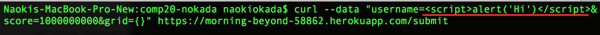
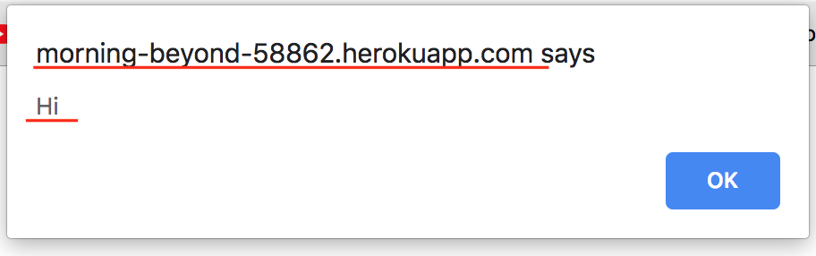
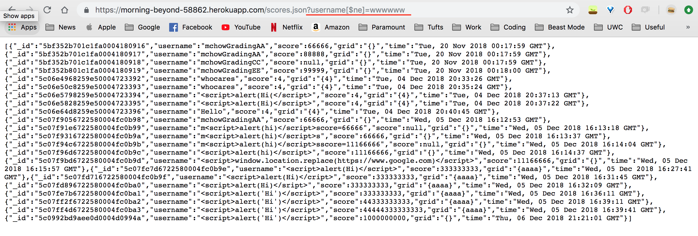
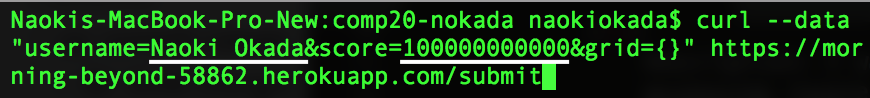
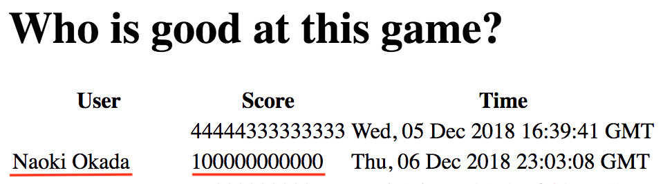
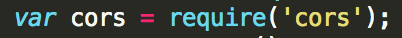

COMP20 Assignment 4
Introduction
The product that I investigated into is a website that keeps track of various players' scores of the game 2048.
When players are done playing the game, their scores are automatically sent to the website's backend. I was hired to find
security and privacy vulnerabilities of the website.
Methodology
I used curl to send post requests to the website. To make get requests, I used Google Chrome and accessed https://morning-beyond-58862.herokuapp.com/ and https://morning-beyond-58862.herokuapp.com/scores.json.
Moreover, I also loooked at the source code to find any flaws in it.
Abstract of Findings
The following security vulnerabilities have been found on the website.
- The server does not validate user input, thus it is possible to send malicious scripts to the database.
- It is possible to retrieve all data from the database.
- Anyone has access to the server, which means they can send data to the server.
Issues Found
- Cross site scripting
- Location: the post('/submit') route where the server gets data from the user and sent it to the database
-
Severity: This issue is very severe since it can allow malicious attackers to gain access to cookies or
compromises the website's content.
-
Description: I sent a post request to /submit and inserted a Javascript code snippet as my username.
When I accessed get /, the website ran the script and gave an alert message that I included in the Javascript
code snippet.
- Submitting Javascript code as my username:

- The JavaScript code executed:

-
Resolution: The developer should validate user input before inserting it to the database. Removing
special characters would solve this issue.
- Database injection
- Location: the get('/scores.json') route where the server retrieves data from the database.
- Severity: This issue is very severe since all data can be accessed by any user.
-
Description: I was able to retrieve all data in the database using the query string "username[$ne]=wwwwww" when
makign a get request from /scores.json.
- I got all data from the database by querying "username [$ne]= wwwwww":

-
Resolution: Similar to the first one, the developer should validate the user's query string. Removing
all special characters would solve the issue.
- No authentication
- Location: the post('/submit') route where the server gets data from the user and sent it to the database
-
Severity: This is highly severe since anyone in the world can send post requests to the website and it will
accept all requests.
-
Description: CORS is turned on for any origin, which allows anyone to add data to the database. For example, using
curl from my own terminal allows me to input data
- Sending a request from my own terminal

- The data was successfully sent to the database

- This line allows access from any origin

- Resolution: The developer should allow access from certain origins.
Conclusion
Although the website does all the functions it needs to do, the level of security is quite low. In the future, the developer
can consider adding more input validation features to prevent malicious input. Furthermore, I would also add a user
authentication feature so that only certain people get access to the website.
References
I used the following sources I found online: